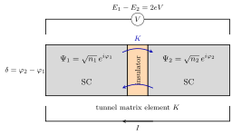
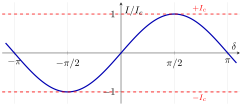
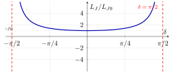

5 The Josephson junction
5.1 Overview
In Chapter 3 we promised a non-linear, dissipationless circuit element that could turn the harmonic LC oscillator into an anharmonic qubit. In Chapter 2 we wrote down the supercurrent in a SQUID loop in terms of a phase difference \(\delta\) across each weak link, but we never derived where that phase difference came from. Both promises are paid off here.
The Josephson junction (JJ) is two superconducting electrodes separated by a thin (typically \(\sim 1\)–\(2\) nm) insulating barrier, written as \(\mathrm{SIS}\) (Superconductor–Insulator–Superconductor). Classically the barrier is impenetrable; quantum mechanically, Cooper pairs tunnel coherently. Brian Josephson’s 1962 insight was that the macroscopic phase coherence of the two BCS condensates survives the tunnelling, so that a supercurrent can flow without any voltage drop, governed entirely by the phase difference between the two sides.
In this chapter we follow the phenomenological derivation of The Feynman Lectures on Physics, Vol. 3, §21-9. Starting from two coupled Schrödinger equations for the macroscopic wavefunctions \(\Psi_1,\Psi_2\), we obtain Josephson’s two constitutive relations:
- First (DC) Josephson equation: \(\;I = I_c \sin\delta\) — a finite supercurrent flows at zero voltage, set by the phase difference.
- Second (AC) Josephson equation: \(\;\hbar\,\dot\delta = 2eV\) — a finite voltage makes the phase wind in time at the rate \(2eV/\hbar\).
From the current–phase relation we read off the Josephson inductance \(L_J = \Phi_0/(2\pi I_c\cos\delta)\): a phase-dependent, non-linear, dissipationless inductance. That is the missing element of Chapter 3.

5.2 Coupled Schrödinger equations
Inside each electrode the superconducting state is described by a single complex order parameter — the BCS macroscopic wavefunction inherited from Chapter 1: \[ \Psi_j(t) = \sqrt{n_j(t)}\, e^{i\varphi_j(t)}, \qquad j = 1,2, \] where \(n_j = |\Psi_j|^2\) is the local Cooper-pair density and \(\varphi_j\) the macroscopic phase. If the two electrodes were isolated, each \(\Psi_j\) would simply evolve as \(i\hbar\,\partial_t\Psi_j = E_j\Psi_j\), where \(E_j\) is the chemical potential (Fermi energy) of side \(j\).
A thin barrier opens a small amplitude for Cooper pairs to tunnel from one side to the other. To leading order in the barrier transparency, the dynamics of the two condensates is captured by the coupled Schrödinger equations
\[ i\hbar\,\frac{\partial \Psi_1}{\partial t} = E_1\,\Psi_1 + K\,\Psi_2, \qquad i\hbar\,\frac{\partial \Psi_2}{\partial t} = E_2\,\Psi_2 + K\,\Psi_1. \tag{4.1} \]
The off-diagonal term is the heart of the model.
The real constant \(K\) is the tunnel matrix element (also: tunnelling amplitude, coupling constant). It has units of energy, is exponentially small in the barrier thickness and height, and quantifies the rate at which Cooper-pair amplitude leaks from one electrode into the other. The microscopic Bardeen tunnelling Hamiltonian gives an explicit expression for \(K\) in terms of the normal-state transparency of the barrier; phenomenologically, \(K\) is the only adjustable parameter of the model.
A few remarks on (4.1) before we solve it:
- Sign / symmetry. The same \(K\) appears in both equations because the barrier is reciprocal: the amplitude to tunnel from \(1\to 2\) equals the amplitude \(2\to 1\) (Hermiticity of the tunnelling Hamiltonian).
- Voltage bias. If we bias the junction with a DC voltage \(V\), the chemical potentials shift so that Cooper pairs (charge \(2e\)) feel an energy difference \[ E_1 - E_2 = 2eV. \tag{4.2} \] This is the only place where the external voltage enters the model.
- What is left out. The model neglects quasiparticle tunnelling, the internal dynamics of the order-parameter magnitude \(|\Psi_j|\) on the scale of the BCS gap \(\Delta\), and any inelastic processes; all of these are subsumed into a single number \(K\). Despite the simplifications, (4.1) reproduces all of Josephson’s predictions.
5.3 Phase–amplitude decomposition
We now insert the polar form \(\Psi_j = \sqrt{n_j}\,e^{i\varphi_j}\) into (4.1) and separate real and imaginary parts. The time derivative is \[ \partial_t \Psi_j = \Big(\tfrac{\dot n_j}{2\sqrt{n_j}} + i\sqrt{n_j}\,\dot\varphi_j\Big)e^{i\varphi_j}. \]
Multiplying (4.1) by \(e^{-i\varphi_j}\) and using \(\Psi_k\, e^{-i\varphi_j} = \sqrt{n_k}\,e^{i(\varphi_k-\varphi_j)}\) gives, for \(j=1\) with \(k=2\), \[ i\hbar\Big(\tfrac{\dot n_1}{2\sqrt{n_1}} + i\sqrt{n_1}\,\dot\varphi_1\Big) = E_1\sqrt{n_1} + K\sqrt{n_2}\,e^{i(\varphi_2-\varphi_1)}, \] and similarly for \(j=2\) with \(k=1\). Writing \(e^{i(\varphi_2-\varphi_1)} = \cos\delta + i\sin\delta\) with \[ \boxed{\;\delta \equiv \varphi_2 - \varphi_1\;} \] the phase difference across the junction, and matching real and imaginary parts on both sides, we obtain four real equations:
Imaginary parts (population dynamics): \[ \dot n_1 = \frac{2K}{\hbar}\sqrt{n_1 n_2}\,\sin\delta, \qquad \dot n_2 = -\frac{2K}{\hbar}\sqrt{n_1 n_2}\,\sin\delta. \tag{4.3} \]
Real parts (phase dynamics): \[ \dot\varphi_1 = -\frac{K}{\hbar}\sqrt{\frac{n_2}{n_1}}\cos\delta - \frac{E_1}{\hbar}, \qquad \dot\varphi_2 = -\frac{K}{\hbar}\sqrt{\frac{n_1}{n_2}}\cos\delta - \frac{E_2}{\hbar}. \tag{4.4} \]
Two observations:
- Charge conservation. Equation (4.3) gives \(\dot n_1 = -\dot n_2\), as it should: every Cooper pair that disappears from electrode 1 reappears in electrode 2.
- Reservoir limit. Each electrode is a macroscopic superconductor connected to an external circuit that replenishes any leaked pairs. On the time-scale of the junction dynamics we can therefore set \[ n_1 \simeq n_2 \equiv n_0 = \text{const}, \] even though pairs are still tunnelling: the current through the junction is finite, but the populations are pinned by the external circuit.
5.3.1 Josephson’s first (DC) equation: current–phase relation
From population dynamics to current is now a one-line argument. The rate at which Cooper pairs leave electrode 1 is \(\dot n_1\); each carries charge \(q^* = 2e\), so the supercurrent through the junction is \[ I = 2e\,\dot n_1 = \frac{4eK}{\hbar}\sqrt{n_1 n_2}\,\sin\delta. \] Defining the critical current \[ I_c \equiv \frac{4eK}{\hbar}\sqrt{n_1 n_2} \;\xrightarrow{n_1\simeq n_2=n_0}\; \frac{4eK\,n_0}{\hbar}, \tag{4.5} \] we obtain Josephson’s first equation,
\[ \boxed{\;I = I_c\,\sin\delta\;} \qquad\text{(DC Josephson effect).} \tag{4.6} \]
Three things are remarkable about (4.6):
- No voltage required. A finite current flows at \(V=0\) — this is the DC Josephson effect. The current is driven by a phase difference, not by a chemical-potential difference.
- Bounded. The supercurrent saturates at \(|I|\le I_c\). If you try to push more than \(I_c\) through the junction, no static solution exists and the junction switches to a finite-voltage state in which the phase winds in time (see (4.10) below).
- Sinusoidal. The \(\sin\delta\) shape is generic for a tunnel barrier; for stronger coupling (point contacts, weak links) higher harmonics \(\sin 2\delta, \sin 3\delta,\ldots\) appear. For the SIS junctions we care about the first harmonic is overwhelmingly dominant.
The phase difference appearing in (4.6) is the gauge-invariant phase \[ \delta = \varphi_2 - \varphi_1 - \frac{2e}{\hbar}\int_1^2 \mathbf A\cdot d\boldsymbol\ell, \] where the line integral is taken across the barrier. In zero vector potential this reduces to \(\delta=\varphi_2-\varphi_1\), the bare phase difference we just used. The line-integral correction is exactly the one needed for (4.6) to be invariant under the electromagnetic gauge transformation \(\mathbf A\to\mathbf A+\nabla\chi,\ \varphi_j\to\varphi_j+(2e/\hbar)\chi\). This is the same \(\delta\) that appeared in the DC-SQUID current of Chapter 2: there we used it without derivation, here we have just defined it.
The critical current \(I_c\) is the maximum supercurrent the junction can sustain at zero voltage. From (4.5) it scales linearly with the tunnelling amplitude \(K\) and with the condensate density. A microscopic calculation by Ambegaokar and Baratoff gives, at \(T=0\), \[ I_c = \frac{\pi\Delta_{\mathrm{BCS}}}{2eR_n}, \] where \(\Delta_{\mathrm{BCS}}\) is the BCS gap and \(R_n\) is the normal-state resistance of the junction (measured above \(T_c\), or — for tunnel junctions — well-approximated by the room-temperature resistance). The practical consequence is that one can estimate \(I_c\) from a simple resistance measurement at room temperature: a typical aluminium tunnel junction with \(R_n \sim 10\) k\(\Omega\) has \(I_c \sim 30\) nA.

5.3.2 Josephson’s second (AC) equation: voltage–phase relation
The phase dynamics (4.4) gives Josephson’s second equation almost for free. Subtracting, \[ \dot\delta = \dot\varphi_2 - \dot\varphi_1 = -\frac{K}{\hbar}\Big(\sqrt{\tfrac{n_1}{n_2}}-\sqrt{\tfrac{n_2}{n_1}}\Big)\cos\delta - \frac{E_2 - E_1}{\hbar}. \] In the reservoir limit \(n_1\simeq n_2\), the bracket vanishes and \[ \dot\delta = \frac{E_1 - E_2}{\hbar}. \] Combined with the voltage–energy relation (4.2), \(E_1 - E_2 = 2eV\), we obtain Josephson’s second equation,
\[ \boxed{\;\hbar\,\dot\delta = 2eV\;} \qquad\text{(AC Josephson effect).} \tag{4.7} \]
Two consequences:
- DC bias \(\Rightarrow\) winding phase. A constant voltage \(V\) makes \(\delta(t) = \delta_0 + (2eV/\hbar)t\). Plugging into (4.6) gives an oscillating supercurrent \(I(t) = I_c\sin\!\big(\delta_0 + \omega_J t\big)\) at the Josephson frequency \[ \omega_J = \frac{2eV}{\hbar}, \qquad \frac{\omega_J}{2\pi V} \approx 483.6\ \text{MHz}/\mu\text{V}. \] This is the AC Josephson effect: a DC voltage produces a high-frequency AC current. The proportionality \(2e/h\) is so accurate that it underpins the SI definition of the volt.
- Flux quantum re-appears. Integrating (4.7) gives \(\hbar\delta = 2e\!\int V\,dt = 2e\,\Phi\), where \(\Phi\) is the magnetic flux threading the loop in which \(V\) is the EMF. Hence \[ \delta = \frac{2\pi\Phi}{\Phi_0}, \qquad \Phi_0 = \frac{h}{2e}, \tag{4.8} \] recovering the flux quantum introduced in Chapter 1 and confirming that the phase difference and the (gauge-invariant) flux through a junction loop are the same dynamical variable up to the factor \(2\pi/\Phi_0\).
The two constitutive relations of a Josephson junction are \[ I = I_c\sin\delta \qquad\text{and}\qquad V = \frac{\hbar}{2e}\,\dot\delta. \] Together they tell us: the phase difference \(\delta\) is the dynamical variable of the junction; the supercurrent depends on its value, the voltage on its rate of change.
5.4 Josephson inductance
We now extract from (4.6)–(4.7) the circuit element the junction realises. Recall the defining relation of an ordinary inductor: \(V = L\,\dot I\), equivalently \(L = (dI/d\Phi)^{-1}\) in terms of the flux \(\Phi\) that produces a current \(I\). We apply the same definition to the JJ.
From (4.8) the phase \(\delta\) plays the role of the flux up to the constant \(\Phi_0/(2\pi)\): \(\Phi = (\Phi_0/2\pi)\delta\), so \(d\Phi = (\Phi_0/2\pi)\,d\delta\). Differentiating the current–phase relation, \[ \frac{dI}{d\Phi} = \frac{dI}{d\delta}\,\frac{d\delta}{d\Phi} = I_c\cos\delta \cdot \frac{2\pi}{\Phi_0} = \frac{2\pi I_c\cos\delta}{\Phi_0}. \] Inverting,
\[ \boxed{\;L_J(\delta) = \left(\frac{dI}{d\Phi}\right)^{-1} = \frac{\Phi_0}{2\pi I_c\cos\delta}\;} \tag{4.9} \]
This is the Josephson inductance.
A check that the definition is consistent: combining (4.6) and (4.7), \[ \dot I = I_c\cos\delta\cdot\dot\delta = \frac{2eI_c\cos\delta}{\hbar}\,V \;\;\Longrightarrow\;\; V = \frac{\hbar}{2eI_c\cos\delta}\,\dot I, \] so we can equivalently write \[ L_J = \frac{\hbar}{2eI_c\cos\delta}, \] which agrees with (4.9) using \(\Phi_0 = h/(2e)\).
The energy stored in the junction is \[ U(\delta) = \int_0^{\delta} I(\delta')\,\frac{\Phi_0}{2\pi}\,d\delta' = \frac{I_c\Phi_0}{2\pi}\big(1-\cos\delta\big) = E_J(1-\cos\delta), \] where the Josephson energy is \[ E_J \equiv \frac{I_c\Phi_0}{2\pi} = \frac{\hbar I_c}{2e}. \] The Josephson inductance is the differential inductance defined above, \[ L_J(\delta) = \frac{\Phi_0}{2\pi I_c\cos\delta} = \frac{\hbar}{2eI_c\cos\delta} = \frac{L_{J0}}{\cos\delta}, \qquad L_{J0}\equiv \frac{\Phi_0}{2\pi I_c}. \] \(E_J\) has units of energy; \(L_J\) has units of henries. They are related by \(E_J = (\Phi_0/2\pi)^2/L_{J0}\), just like the magnetic energy \(\tfrac12 LI^2\) stored in an ordinary inductor.
5.4.1 Properties of \(L_J\)
Equation (4.9) is the central result of this chapter. Several features deserve emphasis.
- Non-linear. \(L_J\) depends on \(\delta\), hence on the current \(I\) through \(\cos\delta = \sqrt{1-(I/I_c)^2}\). In contrast, an ordinary inductor has \(L\) constant — the field energy is quadratic in the current.
- Small-signal limit. For \(|\delta|\ll 1\) (equivalently \(|I|\ll I_c\)), \(\cos\delta\simeq 1\) and \[ L_J \simeq L_{J0} = \frac{\Phi_0}{2\pi I_c}. \] In this regime the junction is approximately a linear inductor of value \(L_{J0}\). This is the regime in which the LC oscillator picture of Chapter 3 applies, with \(L\to L_{J0}\).
- Singularity at \(\delta=\pi/2\). As \(\delta\to\pi/2\), \(\cos\delta\to 0\) and \(L_J\to\infty\). This is exactly the point where the supercurrent reaches its maximum \(I_c\): any further increase in current would require an infinite incremental inductance, which is the mathematical signature that the static (zero-voltage) branch terminates at \(I=I_c\).
- Negative branch. For \(\pi/2<\delta<3\pi/2\), \(\cos\delta<0\) and \(L_J<0\). A negative differential inductance corresponds to a dynamically unstable branch of the \(I\)–\(\delta\) curve; the junction does not sit there for long.
- Dissipationless. No resistive term ever appeared in the derivation. The energy \(E_J(1-\cos\delta)\) is stored in the macroscopic phase and recovered when \(\delta\) returns to zero. (Real junctions have a small parallel quasiparticle conductance, but for \(V\ll 2\Delta/e\) and at low temperature this is exponentially suppressed.)

5.4.2 Where does the non-linearity come from?
The reader may wonder why a tunnel barrier — a perfectly passive piece of insulator — produces a non-linear element. The non-linearity is not in the barrier; it is in the constitutive relation. An ordinary inductor stores energy \(\tfrac12 LI^2\) in a magnetic field built up outside the wire. A Josephson junction stores energy \[ U(\delta) = E_J(1-\cos\delta) \] in the phase of the macroscopic wavefunction — and this is a \(2\pi\)-periodic quantity, not a real number. Periodic potentials are necessarily non-quadratic, and any deviation from the parabolic minimum is the source of anharmonicity.
5.5 Connection to the rest of the course
We can now close two loops left open in earlier chapters.
Connection to Chapter 2 (DC SQUID). In Chapter 2 we wrote the SQUID current as \(I_s = I_{c,1}\sin\delta_1 + I_{c,2}\sin\delta_2\) and quantised the flux through the loop by demanding single-valuedness of the wavefunction along a contour deep inside the superconductor. The two phase drops \(\delta_{1,2}\) in that derivation are exactly the gauge-invariant Josephson phases (4.6) of the two weak links. The flux quantisation condition \(\delta_2-\delta_1 = 2\pi\Phi/\Phi_0\) used there is just (4.8) applied around the loop.
Connection to Chapter 3 (the missing non-linearity). Section 3.5 closed with the observation that an LC oscillator has perfectly evenly-spaced energy levels — and is therefore useless as a qubit. The missing element was a non-linear, dissipationless inductor. Equation (4.9) is exactly that element: it reduces to a linear inductor of value \(L_{J0}\) in the small-amplitude limit, recovering the LC oscillator of Chapter 3 with \(\omega_0 = 1/\sqrt{L_{J0}C}\) — but its full \(1/\cos\delta\) dependence bends the parabolic potential into the cosine well \(E_J(1-\cos\delta)\) that Chapter 5 will quantise.
The Josephson junction is a non-linear, dissipationless inductor. Replacing the linear inductor in the LC circuit of Chapter 3 with a JJ turns the harmonic oscillator \[ H_{LC} = \frac{\hat q^2}{2C} + \frac{\hat\Phi^2}{2L} \quad\longrightarrow\quad H_{JJ} = \frac{\hat q^2}{2C} + E_J\big[1-\cos(2\pi\hat\Phi/\Phi_0)\big] \] into an anharmonic oscillator — the transmon Hamiltonian of Chapter 5. The unequal level spacing that follows from anharmonicity is what makes the lowest two states \(\ket{0},\ket{1}\) addressable as a qubit, and resolves the “missing anharmonicity” problem highlighted at the end of Chapter 3.
5.6 Sources
- Lecturer’s lecture notes: §4 (Josephson junction), pp. 13–15.
- Feynman, R. P., Leighton, R. B. & Sands, M. The Feynman Lectures on Physics, Vol. 3, §21-9 (coupled-wavefunction derivation of Josephson’s equations).
- Tinkham, M. Introduction to Superconductivity, 2nd ed., Dover (2004), Chapter 6 (Josephson effect, RCSJ model, Ambegaokar–Baratoff formula).
- Vool, U. & Devoret, M. Introduction to quantum electromagnetic circuits, Int. J. Circ. Theor. Appl. 45, 897 (2017), §3 (Josephson element as a non-linear inductor).
- Josephson, B. D. Possible new effects in superconductive tunnelling, Phys. Lett. 1, 251 (1962) — the original two-page paper.
- Ambegaokar, V. & Baratoff, A. Tunneling between superconductors, Phys. Rev. Lett. 10, 486 (1963).